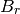
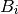
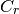
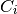

Handling Antennas¶
Antennas are handled in the pylayers.antenna module. PyLayers provides a compact representation of complex antennas using both vector and scalar spherical harmonics representation of the complex antenna radiation pattern.
from pylayers.antprop.antenna import *
from pylayers.antprop.antvsh import *
The first step consists in reading the raw data from an antenna .mat file. In the example below the antenna has been measured in a SATIMO near field chamber. Antennas are by default read in a directory specified relativeley to the curent project pointed by the $BASENAME environment variable.
A = Antenna('S1R1.mat','ant/UWBAN/Matfile')
The Antenna class has a repr method which provides information about the curent object.
A
file name : S1R1.mat
antenna name : Th1
date : 04/12/12
time : 15:55
Notes : Mohamed at the log
Serie : 1
Run : 1
Nb theta (lat) : 91
Nb phi (lon) :180
#%pfile A.show3
If geomview is installed a vizalization of the antenna pattern is obtained in using a show3 method
#A.show3(k=0,typ='Gain')
#A.show3(k=60,typ='Gain')
Unwraping the phase¶
freq = A.fa.reshape(104,1,1)
ed = A.getdelay(freq)
I = A.Ftheta[:,:,:]*np.exp(2*1j*np.pi*freq*ed)
np.shape(A.Fphi)
im= plt.imshow(np.angle(I[:,45,:]))
cb = plt.colorbar()
cb.set_label('phase rad')
plt.xlabel('theta')
<matplotlib.text.Text at 0x3e09a90>
plt.plot(freq[:,0,0]*1e9,np.unwrap(np.angle(I[:,45,85])))
plt.xlabel('frequency (GHz)')
<matplotlib.text.Text at 0x3813510>

The following figure represents all the radiation patterns in the azimuth plane for each of the 104 measured frequencies
print 'Ntheta',A.Nt
print 'Nphi',A.Np
print 'Nf',A.Nf
Ntheta 91
Nphi 180
Nf 104
A.info()
S1R1.mat
type : mat
S1R1
Th1
04/12/12
15:55
Mohamed at the log
1
1
Nb theta (lat) : 91
Nb phi (lon) : 180
No vsh coefficient calculated yet
Evaluation of Vector Spherical Harmonics Coefficients¶
At that stage the Vector Spherical Harmonics coefficients are computed.
The vsh function is implemented in the module antvsh.py and is relying on the ‘spherepack http://www2.cisl.ucar.edu/resources/legacy/spherepack’_ package.
A = vsh(A)
The information about the antenna indicates now the presence of spherical coefficients, in format vsh1.
N1 = 90 and M1 = 89.
There is the same number of coefficients for , , ,  independently to their relative importance.
A.C
Br
-------------
N1 : 90
M1 : 89
Ncoeff s1 8010
Bi
-------------
N1 : 90
M1 : 89
Ncoeff s1 8010
Cr
-------------
N1 : 90
M1 : 89
Ncoeff s1 8010
Ci
-------------
N1 : 90
M1 : 89
Ncoeff s1 8010
A.C.s1tos2(30)
A.C
Br
-------------
N1 : 90
M1 : 89
Ncoeff s1 8010
NCoeff s2 : 495
Bi
-------------
N1 : 90
M1 : 89
Ncoeff s1 8010
NCoeff s2 : 495
Cr
-------------
N1 : 90
M1 : 89
Ncoeff s1 8010
NCoeff s2 : 495
Ci
-------------
N1 : 90
M1 : 89
Ncoeff s1 8010
NCoeff s2 : 495
plt.figure(figsize=(10,10))
A.C.show(typ='s2',k=300)
Transformation in shape 3 - energy thresholding
A.C.s2tos3(1e-5)
plt.figure(figsize=(10,10))
A.C.show('s3')
print len(A.theta)
print len(A.phi)
91
180
Fth2,Fph2 = A.Fsynth3(A.theta,A.phi,pattern=True)
compdiag(0,A,A.theta,A.phi,Fth2,Fph2,'modulus')

A
file name : S1R1.mat
antenna name : Th1
date : 04/12/12
time : 15:55
Notes : Mohamed at the log
Serie : 1
Run : 1
Nb theta (lat) : 91
Nb phi (lon) :180
from IPython.core.display import HTML
def css_styling():
styles = open("../styles/custom.css", "r").read()
return HTML(styles)
css_styling()